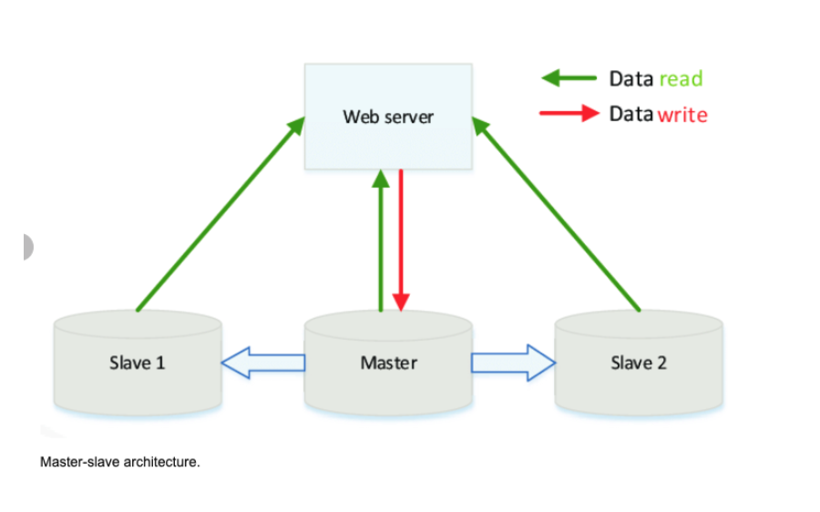
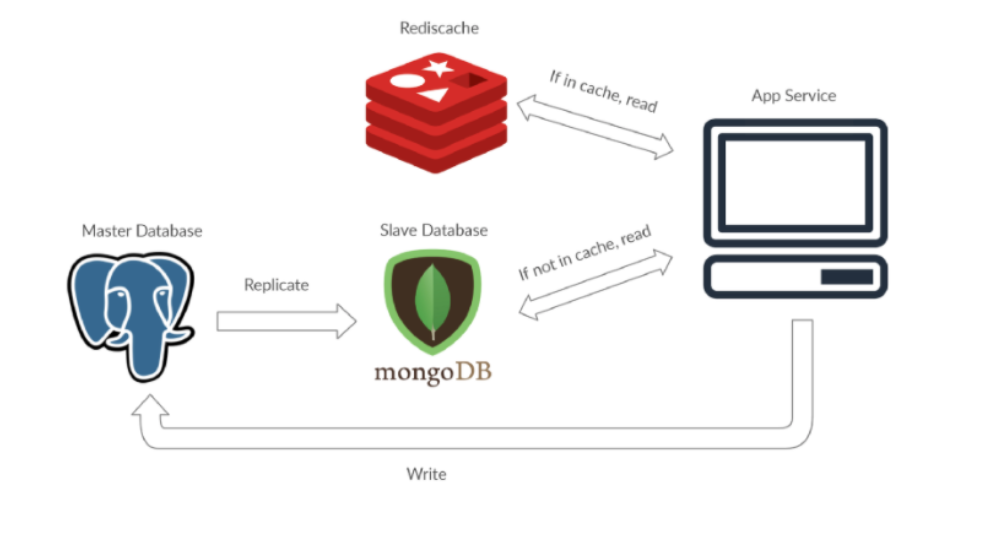
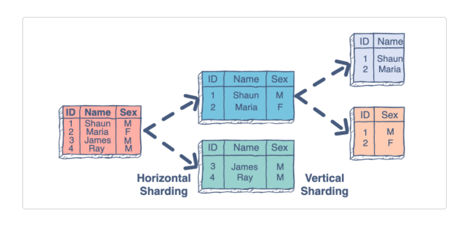
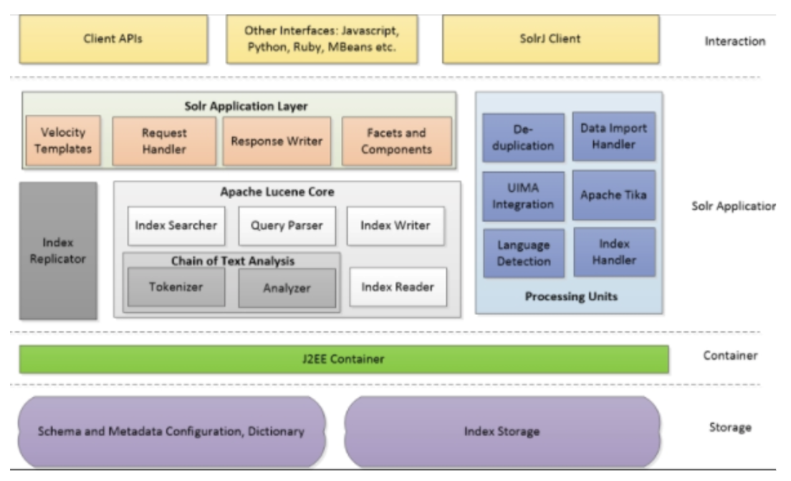
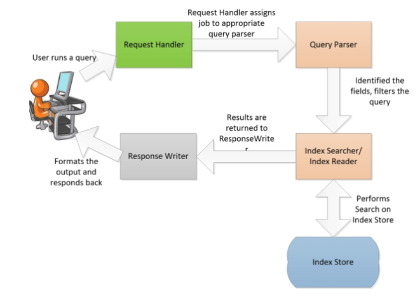

Distributed Databases
CAP Theorem
Consistency: Every read receives the most recent write or an error.
Availability: Every request receives a response, but without guarantee that it contains the most recent version of the information.
Partition Tolerance: The system continues to operate despite arbitrary partitioning due to network failures.
Consistency vs Availability Tradeoff
Consistency and partition Tolerance
Waiting for a response from the partitioned node might result in a timeout error.
When this approach is more applicable: If the use-case requires atomic reads and writes.
Availability and partition Tolerance
Responses return the most readily available version of the data available on any node, but it might not be the latest.
When this approach is more applicable: when the system needs to continue working despite external errors.
Consistency patterns
With multiple copies of the dataset, we need to synchronize the data so clients have a consistent view of the data.
Weak consistency
Reads may or may not been seen after a write.
Weak consistency works well in real time use cases like video chat and realtime multiplayer games.
Eventual consistency
Reads will eventually see it within milliseconds after a write.
Data is replicated asynchronously.
Strong consistency
After a write, reads will see it. Data is replicated synchronously.
Strong consistency is applicable when systems that need transactions.
Availability patterns
Two approaches to support high availability:
fail-overandreplication
Replication
Master-slave and master-master
Fail-over
Active-passive: heartbeats are sent between the active and the passive server on standby.
If the heartbeat is interrupted, the passive server takes over the active’s IP address and resumes service.
Active-active: both servers are managing traffic, spreading the load between them.
Latency vs Throughput
Latency: time to perform some action or to produce a result.
Throughput: number of actions or results per unit of time.
Master + Slave
Master-slave is a way to optimize the I/O in your application other than using caching.
The master database serves as the keeper of most current information.
The true data is kept at the master database, thus writing only occurs there.
Reading is only done in the slave.
Master is the true data keeper while a slave is a replication of master.
If the master goes offline, the system can continue to operate in read-only mode until a slave is promoted to a master or a new master is provisioned.
This architecture serves the purpose of safeguarding site reliability.
If a site receives a lot of traffic and the only available database is one master, it will be overloaded with reading and writing requests.
Making the entire system slow for everyone on the site.
 
Disadvantages
potential for loss of data if the master fails before any new written data can be replicated to across other nodes.
Most master-master systems are either loosely consistent (violating ACID) or have increased write latency due to synchronization.
Conflict resolution comes more into play as more write nodes are added and as latency increases.
Sharding
Is the process of making partitions of data in a database or search engine, such that the data is divided into various smaller distinct chunks, or shards.
Sharding results in less read and write traffic, less replication, and more cache hits.
Index size is also reduced, which generally improves performance with faster queries.
Common approach is performing horizontal sharding.
For example, you can take a tweets table and shard by User ID (Number of User Ids % mod Number of Database Master Servers).

Disadvantages
You’ll need to update your application logic to work with shards, which could result in complex SQL queries.
Data distribution can become lopsided in a shard. For example, a set of power users on a shard could result in increased load to that shard compared to others.
Rebalancing adds additional complexity.
A sharding function based on consistent hashing can reduce the amount of transferred data.
Joining data from multiple shards is more complex.
Sharding adds more hardware and additional complexity.
Apache Solr
Solr is highly reliable, scalable and fault tolerant, providing distributed indexing, replication and load-balanced querying; it is a client-server model.
Apache Solr can run in a master-slave mode.
Index replicator is responsible for distributing indexes across multiple slaves.
The master server maintains index update and the slaves are responsible for talking with the master to get them replicated for high availability.
Internally uses
Apache Lucenelibraries to generate the indexes as well as to provide a user friendly search.

Four logical layers of Solr:
Storage layer: is responsible for management of indexes and configuration metadata. It is typically a file store, locally configured in the configuration of Apache Solr.
Container: java based container on which the instance will run
Solr Application: is the application package that runs on top of the container.
Solr supports—indexing and searching.
Initially, the data is uploaded to Apache Solr through various means; there are handlers to handle data within specific category (XML, CSV, PDF, database, and so on)
Query parser: is responsible for parsing the queries, and converting it to Lucene query objects.
Tokenizer breaks field data into lexical units or tokens.
Interaction: refers to how clients/browser can interact with Apache Solr server.
Reference: https://subscription.packtpub.com/book/big-data-and-business-intelligence/9781783981748/1/ch01lvl1sec11/apache-solr-architecture
Solr Terms
Document: is a set of data that describes something.
Fields: documents are composed of fields, which are more specific pieces of information. Fields can contain different kinds of data.
Solr’s schema is a single file (in XML) that stores the details about the fields and field types Solr is expected to understand.
The schema defines not only the field or field type names, but also any modifications that should happen to a field before it is indexed.
Index
When you add a document, Solr takes the information in the document’s fields and adds that information to an index.
The index stores statistics about terms in order to make term-based search more efficient.
Lucene’s Index (inverted index family): when lucene indexes a document it breaks it down into a number of terms.
It then stores the terms in an index file where each term is associated with the documents that contain it.
You could think of it as a bit like a hashtable.
Lucene
Stackoverflow Answer on Lucene https://stackoverflow.com/questions/2602253/how-does-lucene-index-documents
In reality of course things are more complicated:
Lucene may skip some words based on the particular Analyzer given; words can be preprocessed using stemming algorithm to reduce flexia of the language.
It’s important to understand though, that the Lucene index is append only.
In some point in time the application decides to commit (publish) all the changes in the index.
Lucene finishes all service operations with index and closes it, so it’s available for searching.
After commit index basically immutable.
This index (or index part) is called segment.
When Lucene executes a search for a query it searches in all available segments.
So the question arises – how can we change an already indexed document?
New documents or new versions of already indexed documents are indexed in new segments and old versions invalidated in previous segments using the so-called kill list.
Kill list is the only part of committed index which can change.
As you might guess, index efficiency drops with time, because old indexes might contain mostly removed documents.
This is where merging comes in.
Merging – is the process of combining several indexes to make an index more efficient overall.
What is basically happens during merge is live documents copied to the new segment and old segments removed entirely.
